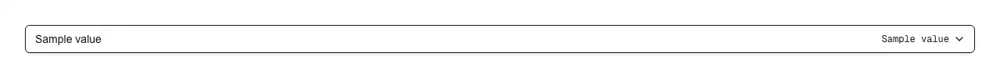

A currency picker: every ISO 4217 currency the runtime knows, named in the reader's own language, sorted the way that language sorts, and searchable by local name, English name, three-letter code or symbol. Reach for it wherever a form has to settle which money an amount is in: the currency on a price, plan or product; the billing currency on a subscription or invoice; the currency of an expense, receipt or reimbursement; the payout, remittance or bank-transfer currency on a payments or Connect onboarding form; the display currency on a multi-currency store or a pricing table; the base and quote currency on an exchange-rate or conversion field; the ledger currency in accounting, bookkeeping and budgeting; and the "default currency" row in workspace, organisation and account settings. Common asks it answers: "currency select", "currency picker", "currency dropdown", "currency selector react", "ISO 4217 select", "currency code select", "searchable currency select", "currency combobox", "list of currencies react", "currency select with symbols", "shadcn currency select", "shadcn currency picker", "react-select currency alternative", "currency autocomplete", "select currency for invoice", "multi-currency dropdown". Official shadcn/ui has no currency, money or price item of any kind — and nothing Intl-aware at all: its select, native-select and combobox are empty shells that know nothing about money, so the data and the arithmetic are on you, and both are where hand-rolled versions go wrong. This one carries no currency table: it reads the codes from Intl.supportedValuesOf("currency") and the names from Intl.DisplayNames, which matters more for currencies than it would for countries, because currencies get replaced — ZWG (Zimbabwean Gold) arrived in 2024, XCG (Caribbean guilder) in 2025, SLE replaced SLL in 2022, and a table baked into a component in 2023 is missing all three today while the browser's own list is not. The curation that matters is small and named: XDR (IMF Special Drawing Rights) and XSU (Sucre) are units of account for settling between central banks, not money anyone is paid in, so they are excluded — while XAF, XOF, XPF and XCD are currencies millions are paid in daily and survive the cut, which is why dropping the whole X prefix (the obvious shortcut) is wrong. Historical codes stay and stay labelled, because the runtime dates them for you — SLL arrives as "Sierra Leonean Leone (1964—2022)" — so a 2021 invoice can still render in the currency it was written in; pass `currencies` when a field should only offer what you accept today. The export that prevents the expensive bug is getCurrencyFractionDigits(): decimal places are not 2 everywhere — they are 0 for JPY, KRW, VND, ISK and some thirty others, and 3 for the Gulf dinars (BHD, JOD, KWD, LYD, OMR, TND), about a quarter of the list — and payment APIs (Stripe, Adyen, PayPal) take the amount in the currency's minor unit, so `Math.round(amount * 10 ** getCurrencyFractionDigits(code))` is the conversion and hardcoding 2 there bills a Japanese customer a hundred times what they agreed to. Pairs directly with pulld's currency-input: feed the chosen code to its `currency` prop and the amount field picks up the same symbol, grouping and precision. Sorting goes through Intl.Collator, the difference between a usable list and a broken one: a plain sort() orders by code point, which drops every accented name — "São Tomé & Príncipe Dobra", "Costa Rican Colón" — below Z at the very bottom where nobody scrolls. The filter reads four faces, because a person has four ways to name money: the local name, the English name (typed constantly on non-English sites, because it is what the pricing page and the processor say), the code (which is what the API takes, so it is what a developer has in their head), and the symbol — and the symbol has to be read before folding, because fold("¥") is the empty string and a filter that quietly shows all 160 rows reads as broken. An exact three-letter code wins outright, and symbols stay qualified rather than narrow, so "$" reaches the US Dollar while AUD, CAD, NZD and HKD keep their A$, CA$, NZ$ and HK$ instead of collapsing into four identical dollar signs. A real combobox, not a styled div: the trigger is a type="button" with role="combobox" and aria-expanded, the panel is a listbox driven by aria-activedescendant, arrow keys, Home, End, Enter and Escape all work, the highlight scrolls itself into view, opening a field that already says Japanese Yen starts on Japanese Yen, and an outside press closes it. Works controlled (`value` + `onValueChange`) or uncontrolled (`defaultValue`), always emitting the ISO 4217 code and never a name or a symbol, so what you store survives the reader switching language; `name` adds a hidden input so it submits with a native form; a stored code outside a narrowed `currencies` still shows its own name instead of silently reading as "nothing chosen", which is what keeps an old ledger row from being lost on the next save; `priority` pins the two or three currencies most of your revenue is in above the alphabet; `symbols` turns the glyph off; and getCurrencyName() and getCurrencySymbol() are exported so an invoice header or a pricing table spells the currency exactly the way the picker did. Styled entirely with shadcn tokens (input, ring, accent, popover, muted-foreground), so it follows light and dark mode, and it ships zero dependencies — no currency-data package, no icon package, one file.

Rendered on the shadcn default neutral palette with harness-generated props.
pnpm dlx shadcn@4.21.0 add @pulld/currency-select
| licence | POINTER |
|---|---|
| primitive base | none |
| type | registry:ui |
| files | src/components/ui/currency-select.tsx |
| npm deps pulled | none beyond the pre-installed peer set |
| registry deps | — |
| semantic / palette / hex | 14 / 0 / 0 |
| writes shared ui/ | yes — can overwrite the project’s own primitives |